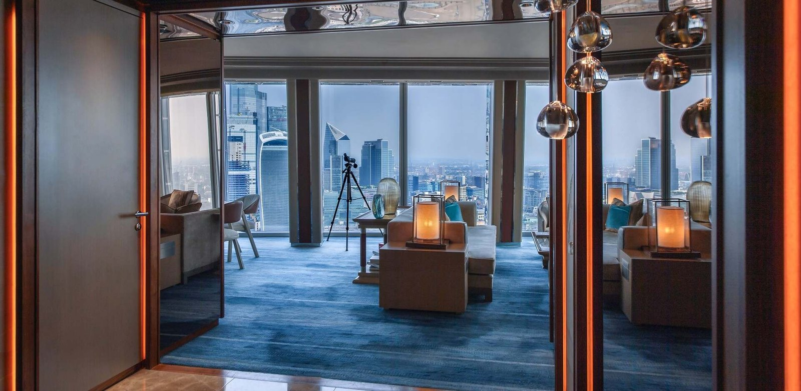
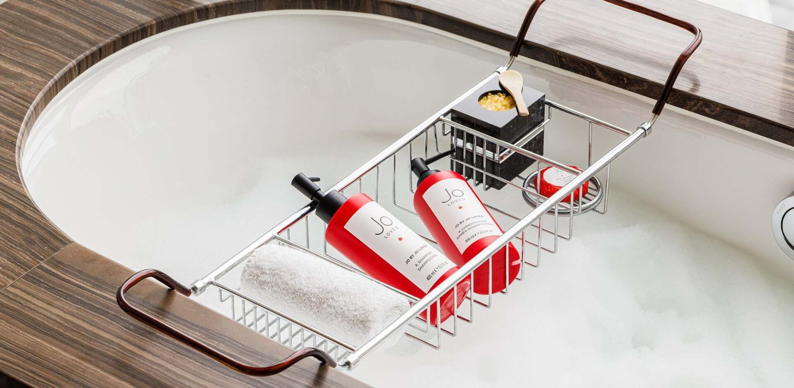
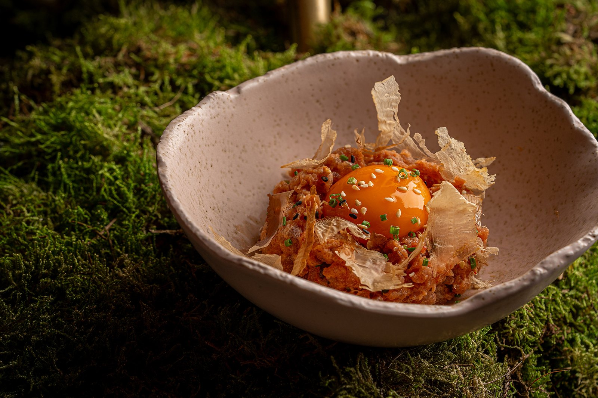

Shangri-La The Shard, avis : Londres vu du 52e étage
Il n'existe pas d'autre hôtel en Europe occidentale d'où l'on regarde une capitale de si haut. Le Shangri-La occupe dix-neuf étages de la tour de Renzo Piano, du 34e au 52e, et cette position lui donne quelque chose qu'aucun palace ne peut acheter. Reste à savoir ce que vaut le reste, à ce tarif.

Tower Bridge vu depuis le Shangri-La The Shard. L'hôtel occupe les étages 34 à 52 de la tour, soit la plus haute adresse hôtelière d'Europe occidentale. Photo : Shangri-La The Shard, site officiel.
Verdict LMHS8,8/10 : la vue est imbattable, le tarif ne l'est pas
- Ce qui écrase la concurrence, une vue que personne ne peut copier : dix-neuf étages entre 34 et 52, la Tamise, Tower Bridge, Saint-Paul et Canary Wharf depuis la chambre, et la piscine à débordement la plus haute d'Europe occidentale au 52e.
- Ce qui coince, le prix d'entrée, autour de 700 € la nuit dans les meilleures offres affichées par l'hôtel, pour une note de 4/5 seulement sur 7 884 avis TripAdvisor. La régularité du service ne suit pas toujours la promesse tarifaire.
- Le verdict, venez pour la vue et payez-la sans illusion : c'est elle que vous achetez, et elle vaut le déplacement. Pour la densité gastronomique ou le spa, Paris fait mieux au même prix.
Ouvert en 2014 dans la tour dessinée par Renzo Piano, 202 chambres et suites réparties sur dix-neuf étages, un restaurant (TĪNG, niveau 35), un bar (GŎNG, niveau 52), un Sky Lounge, une piscine à débordement et un sauna au 52e, une salle de sport ouverte 24 h/24. Forbes Travel Guide Five-Star. Score global : 8,8/10, moyenne simple de nos cinq axes, détaillée plus bas.
L'Indice Vue LMHS : 5/5, et pourquoi
Nous ouvrons ici un indice propriétaire que cet établissement rendait inévitable. L'Indice Vue LMHS, noté sur 5, mesure cinq marqueurs et rien d'autre : l'altitude réelle du plancher des chambres, l'amplitude du panorama, le nombre de monuments identifiables à l'œil nu, la présence de la vue dans les espaces communs autant que dans les chambres, et sa tenue de jour comme de nuit.
Le Shangri-La The Shard coche les cinq. C'est la première adresse à laquelle nous appliquons cet indice, et elle obtient le maximum : les chambres démarrent au 34e étage d'une tour de 309,6 mètres, le panorama couvre les deux rives, on identifie sans jumelles Tower Bridge, la Tour de Londres, Saint-Paul, Canary Wharf et le City Hall, la vue est au restaurant comme au bar comme à la piscine, et Londres de nuit y est un spectacle différent de Londres de jour, pas une version affaiblie. Nous ne prétendons pas qu'aucun hôtel européen ne fera mieux : nous disons que celui-ci ne laisse aucun des cinq marqueurs de côté.
Précision de méthode : l'Indice Vue est un indice thématique, comme l'indice gastronomique de notre palmarès de Lyon ou l'indice romantisme de notre sélection parisienne. Il ne se convertit pas dans la fiche LMHS sur 10 et ne la remplace pas.
Dix-neuf étages dans la tour de Renzo Piano
The Shard culmine à 309,6 mètres. C'est le plus haut bâtiment d'Europe occidentale, dessiné par Renzo Piano comme un éclat de verre planté dans Southwark, et l'hôtel y a ouvert en 2014, premier hôtel de gratte-ciel de Londres. Le Shangri-La en occupe les étages 34 à 52, ce qui produit une particularité rare : la tour se rétrécit en montant, donc les plateaux ne sont jamais identiques, et les chambres non plus. Les huit façades inclinées ne se rejoignent pas au sommet, elles se croisent, et les baies vitrées penchent avec elles.
Le parti pris décoratif est celui de la marque : marbre, bois clair, lignes calmes, motifs asiatiques discrets, moquettes bleutées. Rien d'ostentatoire, ce qui est une décision courageuse dans un bâtiment qui l'est totalement. On monte pour la vue, l'intérieur a l'intelligence de ne pas lui faire concurrence. Le revers, c'est qu'un client qui vient chercher un décor d'auteur, comme au Cheval Blanc Paris, ne le trouvera pas ici.
Les chambres : 202 clés, onze catégories, aucune sans vue

Ce que vous obtenez selon la catégorie
Les 202 chambres et suites se répartissent en onze catégories, dont six de suites. Les surfaces sont annoncées par l'hôtel et elles sont généreuses pour Londres, ville où le 5 étoiles à 22 m² existe : 30 à 48 m² pour une Superior Shard, l'entrée de gamme, 32 à 47 m² pour une Deluxe City View, 43 à 60 m² pour une Iconic City View installée dans les angles de la tour. Côté suites, 87 m² pour la Southwark, 117 m² pour la London, 125 m² pour la Westminster, et de 188 à 232 m² pour la Shangri-La Suite.
Le niveau d'équipement est constant d'un bout à l'autre de la gamme : literie Frette, sols de marbre chauffants, toilettes japonaises Washlet, produits Jo Loves, douche à l'italienne et baignoire séparée. Et un détail que peu d'hôtels ont l'idée d'offrir : une paire de jumelles dans chaque chambre, qui transforme la baie vitrée en poste d'observation.

La baignoire face à la ville, l'argument le plus copié de Londres
C'est la signature de la maison, et c'est une catégorie de chambre à part entière : la Deluxe City View Bathroom With A View place la baignoire devant la baie vitrée panoramique. Même dispositif dans les Iconic Shard Suites. Des occultants permettent de garder la vue sans être vu, ce qui n'est pas un détail à cette hauteur.
C'est le genre d'idée qui résume l'établissement : il ne s'agit pas d'ajouter du luxe, mais de placer la vue là où on ne l'attend pas. Si vous ne réservez qu'une chose ici, réservez cette catégorie, pas la suite la plus chère.
TĪNG et GŎNG : une table correcte, un bar iconique

TĪNG, niveau 35
Le nom signifie « salon » en chinois. La salle, au 35e étage, sert le petit-déjeuner, le déjeuner, le dîner et un afternoon tea devenu une institution locale. La cuisine est présentée par la maison comme une fusion asiatique contemporaine travaillée avec des produits britanniques de saison, sous la direction du chef exécutif Paolo Belloni, passé par le Four Seasons du Hampshire ; la pâtisserie est signée Piero Sottile. L'afternoon tea existe en version St-Germain, et se réserve des semaines à l'avance le week-end.
Soyons précis sur le niveau : TĪNG n'a pas d'étoile Michelin, et ne prétend pas en avoir. C'est une très bonne table d'hôtel avec une vue exceptionnelle, ce qui n'est pas la même chose qu'une destination gastronomique. Les cartes ne sont pas publiées en ligne autrement qu'en PDF, prévoyez de les demander avant de réserver.
GŎNG, niveau 52
Le bar occupe le dernier étage de l'hôtel et revendique le titre de plus haut bar d'hôtel d'Europe occidentale, ce que la hauteur de la tour rend difficile à contester. Son nom vient du dougong, l'assemblage de consoles en bois de l'architecture chinoise traditionnelle, dont le dessin structure la salle. On y boit des cocktails construits autour d'un ingrédient du répertoire asiatique, sur une carte courte et sérieuse, avec une offre légère d'inspiration japonaise à grignoter.
Point pratique qui vaut de l'argent : le GŎNG est ouvert aux non-résidents. Un verre au coucher du soleil y revient souvent moins cher qu'un billet pour la plateforme d'observation The View from The Shard, deux étages plus haut, et vous êtes assis. Réservez, surtout entre avril et septembre.
La piscine du 52e : la plus haute d'Europe occidentale
Au dernier étage, la piscine à débordement donne l'illusion de se prolonger dans le vide au-dessus de Southwark. C'est l'image la plus reprise de l'hôtel, et la seule de cette catégorie sur le continent : aucun autre hôtel d'Europe occidentale ne fait nager ses clients aussi haut. À côté, un sauna panoramique et une salle de sport ouverte en permanence.
Il faut savoir ce que l'on trouve, et surtout ce que l'on ne trouve pas. Le spa se limite à deux salles de soins, où les protocoles utilisent les produits ELEMIS, complétés par des prestations de coiffure et d'esthétique confiées à des partenaires extérieurs. Les soins ne sont pas accessibles aux moins de 18 ans. Ce n'est pas un spa de palace au sens parisien du terme : rien à voir avec les 1 500 m² du Dior Spa du Cheval Blanc ou les installations de notre sélection des hôtels de luxe avec spa à Paris. Ici, le bien-être tient dans une piscine spectaculaire et deux cabines.
La fiche LMHS détaillée
Notre fiche LMHS décompose l'établissement en cinq axes de poids égal, choisis selon ce qu'il propose réellement. La note globale est leur moyenne simple, vous pouvez la recalculer.
| Axe | Score | Commentaire |
|---|---|---|
| Vue | 10/10 | Étages 34 à 52 d'une tour de 309,6 m. Aucun équivalent en Europe occidentale, ni depuis la chambre, ni depuis la piscine. |
| Chambres et décor | 9,0/10 | 30 à 48 m² dès l'entrée de gamme, ce qui est rare à Londres. Frette, marbre chauffant, Washlet, jumelles. Décor de marque, sans signature d'auteur. |
| Restauration | 8,5/10 | TĪNG solide et bien situé, afternoon tea réputé, GŎNG unique. Aucune étoile Michelin, une seule vraie table. |
| Service | 9,0/10 | Forbes Travel Guide Five-Star. Mais 4/5 seulement sur 7 884 avis TripAdvisor, avec des signalements récurrents d'irrégularité. |
| Rapport prix-expérience | 7,5/10 | Autour de 700 € la nuit dans les meilleures offres affichées par l'hôtel, spa réduit à deux cabines, table sans étoile. Vous payez l'altitude. |
Score fiche LMHS : 8,8 / 10 · (10 + 9,0 + 8,5 + 9,0 + 7,5) ÷ 5 = 8,8 · Relevés du 30 juillet 2026.
Le bémol LMHS
Soyons directs : le Shangri-La The Shard vend une vue, et facture un palace.
La meilleure offre affichée par l'hôtel le 30 juillet 2026 démarrait à 699 € la nuit, réservée aux membres du programme de fidélité, et les forfaits courants s'échelonnaient de 933 € à 1 749 €. À ce niveau de prix, à Paris comme à Londres, un client attend un spa complet, une table étoilée et un service sans accroc. Il trouve ici deux cabines de soins, une table sans étoile, et une note de 4/5 sur près de huit mille avis, ce qui reste bon dans l'absolu mais nettement en dessous de ce que les tarifs laissent espérer.
Deuxième point, structurel celui-là : la vue est un actif inégal. Toutes les chambres en ont une, mais elles ne se valent pas. Une Superior Shard orientée sud regarde Southwark et les voies de London Bridge ; une Iconic City View d'angle regarde la Tamise et Tower Bridge. L'écart d'expérience entre les deux est considérable, et il est facturé. Demandez explicitement l'orientation à la réservation, ne vous fiez pas au seul nom de la catégorie.
Troisième point, mineur mais révélateur : les cartes des restaurants ne sont accessibles qu'en PDF, sans prix affichés en clair sur le site. Pour un établissement de ce rang, c'est une opacité inutile.
Le mot de LucasOn n'achète pas une chambre, on achète une altitude
Il faut être honnête sur ce qu'on vient chercher ici. Le Shangri-La The Shard n'a pas le meilleur spa d'Europe, ni la meilleure table de Londres, ni le décor le plus mémorable. Il a quelque chose qu'aucun concurrent ne peut construire sans démolir un quartier : dix-neuf étages au-dessus d'une capitale de deux mille ans. Vous vous réveillez avec Tower Bridge sous la fenêtre, vous prenez un bain devant Saint-Paul, vous nagez au 52e étage. Cette expérience-là ne se compare à rien d'autre en Europe occidentale, et elle justifie à elle seule une nuit. Mais une seule. Pour un séjour long, pour un anniversaire où le service compte autant que le décor, pour un vrai spa, allez ailleurs et payez moins. La bonne façon de vivre cet hôtel, c'est d'y venir une nuit, de prendre une chambre d'angle, et de ne pas quitter la fenêtre.
Lucas Lecoq, rédacteur en chef
Pour qui est le Shangri-La The Shard ?
Pour une nuit qui doit marquer. Anniversaire, demande en mariage, première nuit d'un voyage : c'est le format où cet hôtel donne tout. Prenez une catégorie d'angle ou une Bathroom With A View, arrivez avant le coucher du soleil.
Pour un voyageur d'affaires qui atterrit à London Bridge. La gare est au pied de la tour, avec les liaisons vers Gatwick et le sud-est. On sort de l'ascenseur et on est dans le train. Peu d'adresses de ce niveau offrent cette immédiateté.
Pas pour un séjour bien-être. Deux cabines de soins et une piscine à créneaux ne suffisent pas à occuper trois jours. Si le spa est votre motif de voyage, notre palmarès des 50 meilleurs hôtels et spas de France propose de meilleurs rapports qualité-prix, souvent pour moitié moins cher.
Pas pour qui a le vertige, et ce n'est pas une plaisanterie : les baies vitrées descendent jusqu'au sol et la tour s'incline.
Fiche pratique
| Adresse | 31 St Thomas Street, Londres SE1 9QU, Royaume-Uni |
| Téléphone | +44 20 7234 8000 |
| Ouverture | 2014, étages 34 à 52 de The Shard (309,6 m, Renzo Piano) |
| Capacité | 202 chambres et suites, onze catégories dont six de suites |
| Restauration | TĪNG (niveau 35), GŎNG (niveau 52), Sky Lounge, afternoon tea |
| Bien-être | Piscine à débordement et sauna au niveau 52, salle de sport 24 h/24, deux cabines de soins ELEMIS |
| Tarifs relevés | Dès 699 €/nuit sur l'offre membres du 30 juillet 2026 ; forfaits de 933 € à 1 749 € |
| Distinction | Forbes Travel Guide Five-Star |
| Accès | London Bridge au pied de la tour ; Borough Market, Tate Modern et le Globe à pied |
| Réservation | shangri-la.com, site officiel → |
FAQ : Shangri-La The Shard
Combien coûte une nuit au Shangri-La The Shard ?
Le 30 juillet 2026, la meilleure offre affichée sur le site de l'hôtel démarrait à 699 € la nuit, dans une vente flash réservée aux membres du programme de fidélité. Les forfaits courants s'échelonnaient de 933 € pour « Love is in the Air » à 1 749 € pour « Suite Indulgence », et le réveillon du Nouvel An à 1 399 €. Les agrégateurs affichent parfois des tarifs inférieurs en semaine et hors saison. Comptez au minimum 700 € pour une entrée de gamme à une date recherchée.
Le GŎNG Bar est-il accessible sans dormir à l'hôtel ?
Oui. Le GŎNG, au 52e étage, est ouvert aux non-résidents, et c'est la façon la plus élégante de voir Londres d'en haut : un cocktail y coûte souvent moins qu'un billet pour la plateforme d'observation The View from The Shard, et vous êtes assis, au chaud, avec un verre. Réservez, en particulier pour l'heure du coucher de soleil entre avril et septembre.
Quelle chambre choisir pour la meilleure vue ?
Les Iconic City View Rooms, installées dans les angles de la tour, offrent l'ouverture la plus large. Pour la baignoire face au panorama, il faut la catégorie Deluxe City View Bathroom With A View ou une Iconic Shard Suite. Surtout, précisez l'orientation à la réservation : le nord regarde la City et Saint-Paul, le sud regarde Southwark et les voies de London Bridge. L'écart d'expérience est réel.
Y a-t-il un vrai spa au Shangri-La The Shard ?
Il y a une piscine à débordement et un sauna panoramique au 52e étage, une salle de sport ouverte 24 h/24, et deux salles de soins où les protocoles utilisent les produits ELEMIS, complétées par des prestations d'esthétique et de coiffure assurées par des partenaires extérieurs. Les soins sont réservés aux plus de 18 ans. C'est un bel espace bien-être, ce n'est pas un spa de palace : pour cela, voyez notre sélection des hôtels de luxe avec spa à Paris.
TĪNG a-t-il une étoile Michelin ?
Non. TĪNG, au 35e étage, est une table d'hôtel de bon niveau, décrite par la maison comme une fusion asiatique contemporaine travaillée avec des produits britanniques de saison, sous la direction du chef exécutif Paolo Belloni. Son afternoon tea est une institution londonienne. Mais l'établissement ne revendique aucune distinction Michelin, et c'est ce qui pèse sur notre axe restauration.
Quel est l'équivalent parisien du Shangri-La The Shard ?
Il n'y en a pas, au sens strict : Paris interdit ce genre d'altitude en centre-ville. Le Shangri-La Paris, dans l'ancien hôtel particulier du prince Roland Bonaparte, offre la même marque et une vue sur la tour Eiffel, mais depuis le sixième étage et dans un tout autre registre, patrimonial et intime. Pour la comparaison qui a du sens, celle du choc visuel et du prix, voyez notre avis sur le Cheval Blanc Paris, noté 9,0/10.
Méthode et sources
Avis établi selon la fiche LMHS : cinq axes de poids égal (vue, chambres et décor, restauration, service, rapport prix-expérience), notés sur 10, dont la moyenne simple donne le score global. Aucun séjour de contrôle n'a été effectué pour cet avis, et nous ne prétendons pas le contraire : l'analyse repose sur les données publiques de l'établissement, ses fiches de chambres et de restauration, les tarifs affichés sur son site officiel et relevés le 30 juillet 2026, sa distinction Forbes Travel Guide Five-Star, et le dépouillement des avis clients vérifiés (4/5 sur 7 884 avis TripAdvisor, 26e rang sur 1 205 hôtels londoniens à cette date). L'Indice Vue LMHS, noté sur 5, est un indice thématique propre à cette page : altitude du plancher des chambres, amplitude du panorama, monuments identifiables à l'œil nu, présence de la vue dans les espaces communs, tenue de jour comme de nuit. Aucun partenariat commercial, aucune affiliation, aucun séjour offert. Photographies : Shangri-La The Shard et TĪNG Restaurant, sites officiels.
Sources utiles
- Shangri-La The Shard, site officiel
- Chambres et suites, surfaces officielles
- Offres et forfaits, tarifs relevés le 30 juillet 2026
- TĪNG Restaurant, site officiel
- The Shard, page de l'hôtel
- Avis clients vérifiés, TripAdvisor
Pour aller plus loin
- Cheval Blanc Paris : le palace LVMH tient-il ses promesses ?
- Les meilleurs hôtels de luxe à Paris : 19 adresses classées
- Hôtel de luxe avec spa à Paris : les 8 meilleures combinaisons
- Les 50 meilleurs hôtels et spas de France, palmarès national 2026
- Monteverdi Tuscany : le village toscan devenu hôtel d'auteur
- Notre méthode, les grilles de notation et les règles d'indépendance